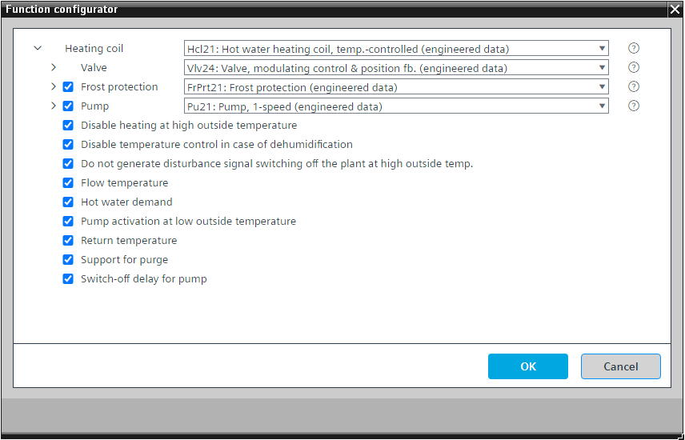

[Hcl21] 热水加热盘管，温控
Program block, name / node subtype: [Hcl21] Hot water heating coil, temperature-controlled
Library hierarchy: Ventilation and air conditioning equipment
Family: Hcl
项目树 | 图表 |
|---|---|
|
|
|


Configurator


程序块存储在没有 I/Os. 的库中 使用auto-create and auto-connect函数创建 I/Os 和 /or 将它们连接到接口块，例如 R_A、CMD_B。或者，从包含库中预定义 I/Os 的文件夹中取出 I/Os，并从工厂中取出 /or，并将它们连接到接口块。
通过改变阀门位置和切换可选泵来控制供气温度（加热）。
在加热线圈变为非活动状态后（阀门和可选泵的操作状态都等于“假”），操作状态信号有一个延迟关闭时间，该延迟关闭时间与电加热线圈或冷却线圈不同，必须保持低电平，例如 5 秒，以免延迟 CMDSEQ_B 的关闭顺序，如果在空气处理机组设备中使用（最有可能是这种情况）。
该程序块具有以下可选功能：
Option: Frost protection (1xBI, 1xAI)
执行防冻保护 (FrPrt21)。
如果该盘管用作再热器，请删除此选项。
Option: Pump (1xBO, 4xBI)
控制泵 (Pu21)。可以有不同的替代方案，例如 TwnPu21。
当阀门处于活动状态（阀门位置超过特定值，例如 4 %）时，泵启动；当阀门处于非活动状态（阀门位置低于特定值，例如 2 %）时，泵会在可选延迟后停止。
Option: Disable heating at high outside temperature
高于特定外部气温（例如高于 18 °C）时将禁用加热。
如果该盘管用作再热器，请删除此选项。
Option: Disable temperature control in case of dehumidification
提供一个接口（最有可能是冷却盘管）和逻辑，以在除湿时禁用温度控制，以便在冷却盘管执行除湿时不预热空气。
如果该盘管用作再热器，请删除此选项。
Option: Do not generate disturbance signal switching off the plant at high outside temperature
为了提高空气处理机组在室外温度较高时的可用性，禁用了关闭设备的干扰信号的生成，并且设备在加热盘管发出警报时继续运行。
Option: Flow temperature (1xAI)
创建流动温度。
Option: Hot water demand
产生需要热水的信号。这通常由热水供应协调功能读取，例如 SplyHw21、SplyHw22。
热水需求有延迟关闭时间。
Option: Pump activation at low outside temperature
即使线圈未运行，也会在外部温度较低（例如低于 4 °C）时启动泵。
这改善了防冻保护。
Option: Return temperature (1xAI)
创建返回温度。
Option: Support for purge
提供在启动吹扫期间在 100 % 处打开阀门的接口和逻辑，以及在给定时间内（例如 5 分钟）从 100 % 到 0 % 关闭阀门的斜坡。阀门很可能不会返回到 0 %，因为温度控制接管了。
如果该盘管用作再热器，请删除此选项。
Option: Switch-off delay for pump
阀门激活时泵的关闭延迟。
如果上级逻辑（工厂级）发出异常信号，泵将立即停止。
姓名 | 描述 | 类型 | 报警/通知类 | 趋势/类型 |
|---|---|---|---|---|
Vlv | Valve | N/A | N/A | |
TCtr | Temperature controller | Ctr: Controller | N/A | N/A |
姓名 | 描述 | 类型 | 报警/通知类 | 趋势/类型 |
|---|---|---|---|---|
Pu | Pump | N/A | N/A | |
FrPrt | Frost protection | N/A | N/A | |
HwDmd | Hot water demand | BCalcVal: Binary calculated value | No | No |
TFl | Flow temperature | AI：模拟输入 | 是的，4 | 是的，2 |
TRt | Return temperature | AI：模拟输入 | 是的，4 | 是的，2 |
描述 |
|---|
Pump activation at low outside temperature |
Switch-off delay for pump |
Disable heating at high outside temperature |
仅在外部温度较高时才生成关闭设备的干扰信号。 |
Support for purge |
Disable temperature control in case of dehumidification |